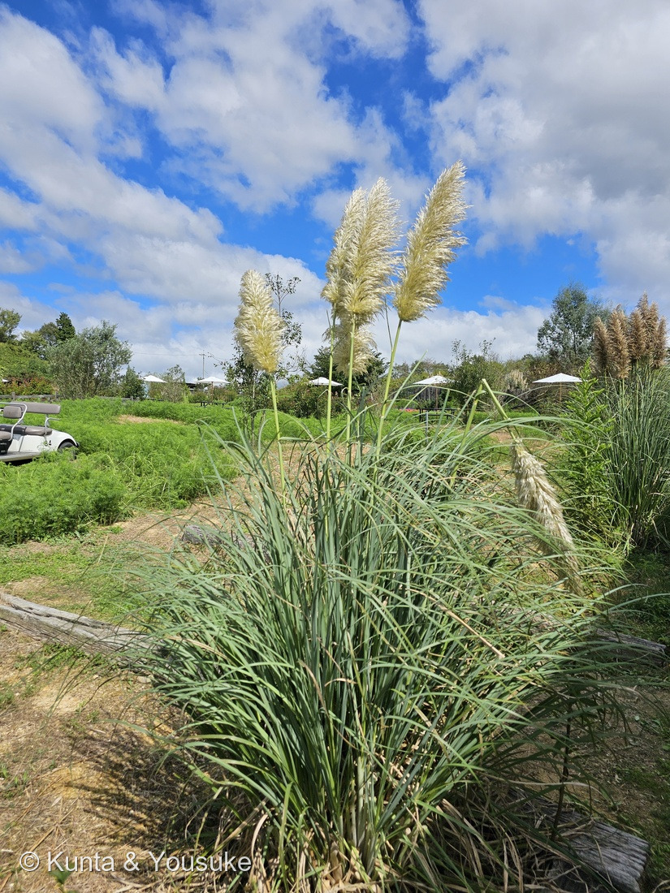
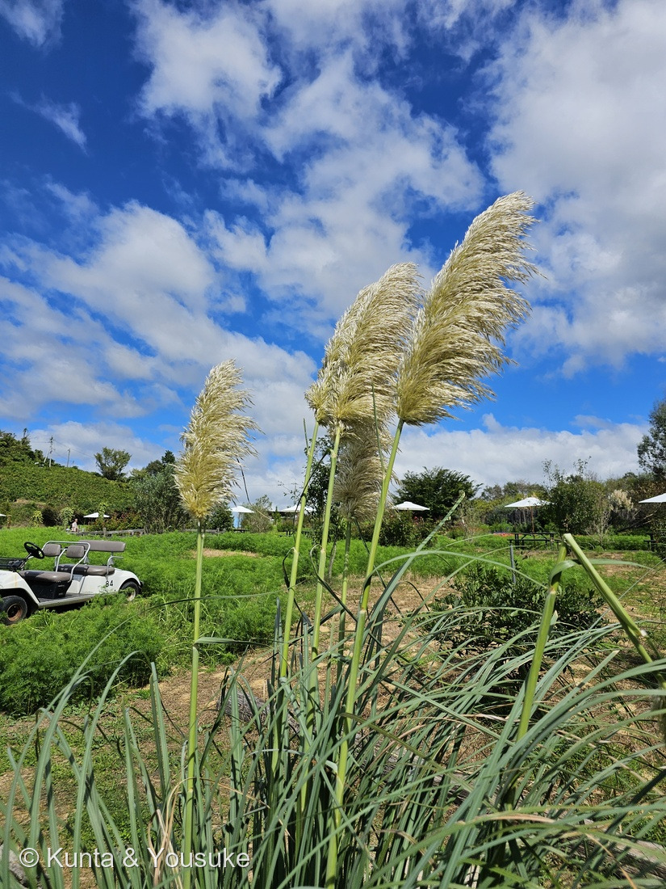
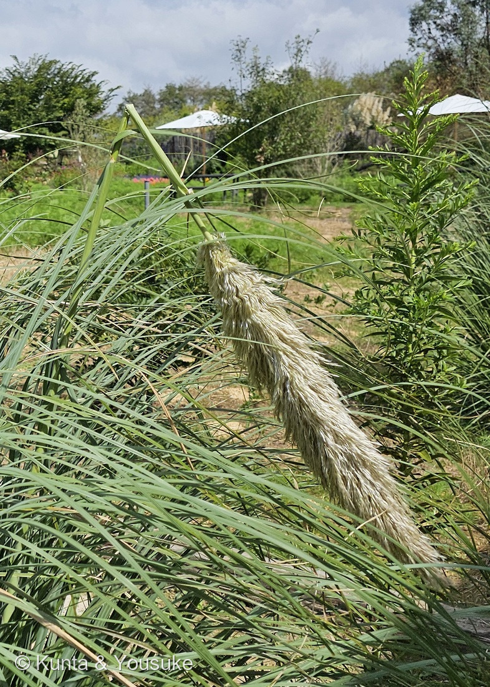
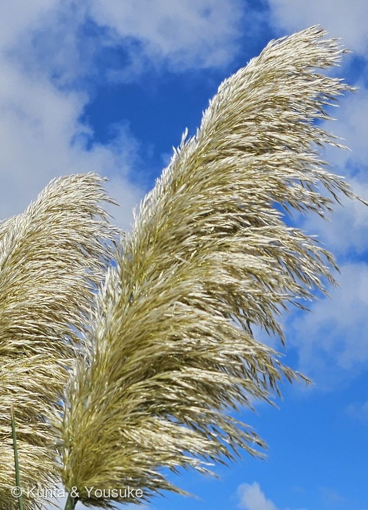

地図を読み込んでいるよ…
🔍 写真も地図も、押しているあいだ拡大して見られるよ（スマホは指を置いてすこし待ってね）。
🌍 の地図＝この子がもともと自生している場所を緑に。南アメリカ南部（アルゼンチン・ボリビア・ブラジル・チリ・パラグアイ・ウルグアイ）。日本には明治時代に観賞用として入り、公園や花壇に植えられるほか、空地に逸出していることもある。くわしくは下の地図の説明を見てね。
⭐南アメリカ南部の草原の子だよ＝英語版Wikipediaは原産を「アルゼンチン・ボリビア・ブラジル・チリ・パラグアイ・ウルグアイ」とし、ふるさとでは川ぞいの湿った土に生えるという。⭐英名の「パンパス」は、この地方の大草原の名前。⚠国ごとにしか塗れないので、ブラジルやボリビアのぜんぶが緑なのは広めだよ。⚠世界じゅうで観賞用に植えられ野生化しているが（英語版Wikipedia）、そのぶんは塗っていない。⭐世羅の花の駅のこの株は、植えられたもの（⚠ぼくの読み）。
⚠ 地図は国（日本と中国だけ県・省）までしか塗れないから、ほんとうの分布より広く見えていることがあるよ。地図はだいたいの場所。正確なところは、上の文を見てね。
シロガネヨシ（白銀葦）＝パンパスグラス
Cortaderia selloana (Schult. & Schult.f.) Asch. & Graebn.（⚠雄株か雌株か・品種は決めていない）
別名 · パンパスグラス（英名 pampas grass から）／シラカネヨシ／お化けススキ（俗称）／中国名 蒲苇
イネ科 · Poaceae（ダントニア亜科 Danthonioideae · シロガネヨシ属 Cortaderia · イネ目 Poales）── ⭐⭐ダントニア亜科ははじめて＝⭐185 タカノハススキ（ススキ）や339 チカラシバのキビ亜科とは別の亜科
燻太さんの言葉「薄い黄金色のような立派な穂が出ているよ。これはパンパスグラスかな？葉っぱも一枚がとても長くて、うっかり茂みに手を入れちゃったら、切り傷だらけになっちゃいそう。」── ⭐「切り傷だらけ」が、そのまま属の名前（「切るもの」）だった
⭐⭐⭐⭐ 名前と学名の由来 ── 「切るもの」と、ブラジルを歩いた植物学者
- ⭐⭐⭐⭐ 属名 Cortaderia＝アルゼンチンのスペイン語 cortadera（切るもの）から＝かみそりのように鋭い葉のふちを指している（英語版Wikipedia）。⭐⭐燻太さんの「うっかり茂みに手を入れちゃったら、切り傷だらけになっちゃいそう」が、そのまま属の名前だった。
- ⭐⭐ 種小名 selloana＝ドイツ・ポツダム生まれの植物学者フリードリヒ・セロー（Friedrich Sellow、1789〜1831）にちなむ＝ブラジルで植物を集め、南アメリカの植物を調べた人（英語版Wikipedia）。1827年にシュルテス父子が名づけた（同）。
- ⭐⭐ 和名「シロガネヨシ（白銀葦）」＝白銀色の穂の、ヨシ（アシ）のような大きな草。⭐英名から「パンパスグラス」とも呼ばれる（日本語版Wikipedia）。
- ⭐ 英名「pampas grass」＝南アメリカの大草原「パンパス」にちなむ（英語版Wikipedia）。
- ⭐ 俗称「お化けススキ」＝ススキに似ているのに、ずっと高く育つから（日本語版Wikipedia）。
⭐⭐⭐ この植物のこと ── 南米の草原から来た「お化けススキ」
- ⭐⭐ 原産は南アメリカ南部＝アルゼンチン・ボリビア・ブラジル・チリ・パラグアイ・ウルグアイ（英語版Wikipedia）。⭐ふるさとでは、川ぞいの湿った土に生える（同）。
- ⭐⭐ 日本には明治時代に入ってきた（日本語版Wikipedia）。公園・花壇の植えこみや、道路の分離帯の緑化に使われ、穂は生け花やドライフラワーになる（同）。
- ⭐⭐⭐ 雄株と雌株がある（三河・日本語版Wikipedia）。⭐雄株の穂は細長く、雌株の穂は幅広くて綿毛を持つ（日本語版Wikipedia）。⭐三河は「雄株は茎の高さが株（草むら）の高さの約2倍、雌株はほぼ同じ高さ」とも書いている。
- ⭐⭐ 高さ2〜3m（三河は2〜4m）になる多年草。穂は8〜10月（日本語版Wikipedia・三河）。⭐矮性の品種や、穂が紫色の品種もある（日本語版Wikipedia）。
- ⚠⭐ 世界のあちこちで、観賞用に植えられたものが野生化している（英語版Wikipedia「cultivated ornamental and invasive species」）。⭐日本でも、庭園から広がって空地で見られることがある（三河）。
- ⭐ 寒さにはやや弱く、葉が茶色になる。でも関東地方までなら株ぜんたいが枯れることはまずなく、翌春に新しい葉が出てくる（日本語版Wikipedia）。
⚠ 同定について ── 羽毛のような1本の穂、青みがかった葉の大きな株
- ⭐⭐⭐⭐ シロガネヨシ Cortaderia selloana とした。⭐燻太さんの「パンパスグラスかな？」は当たっていたよ。⭐決め手は3つ＝①穂は枝が直立してつく、密な羽毛のような1本の円錐花序（写真②④）②白粉を帯びたような青みがかった緑の細長い葉が、根もとから大きな株を作る（写真①）③まっすぐな太い茎が株の上に高く立ち、その先に穂が1本ずつ（写真①②）。
- ⭐⭐⭐ いちばん似ているのはススキ（185 タカノハススキはススキの品種）。⭐でもススキの穂は、10〜40本ほどの総状花序が、手のひらの指のように分かれて広がる（三河）。⭐この子の穂は、枝がみんな上を向いて、1本の羽毛のようにまとまっている（写真④）。
- ⭐⭐ ほかに落とした相手＝オギ（株を作らず、根茎で広がる＝三河）／Cortaderia jubata（花序がピンク色で、やや小型＝三河）。
- ⚠⚠ 雄株か雌株かは決めない＝穂は幅広くてふわふわしているので、雌株らしく見える（日本語版Wikipedia「雌株は幅広く綿毛を持つ」）。⚠でも写真①で測ると、茎の高さは株の高さの約1.6倍（⚠ぼくの目測）＝三河の「雄株は約2倍、雌株はほぼ同じ」のちょうどあいだ。⏳小穂の毛を近くで見れば決まる（宿題）。
- ⚠ 品種も決めない＝名札が写っていないので。
⭐⭐⭐⭐⭐ 燻太さんの「切り傷だらけになっちゃいそう」── それが属の名前
- ⭐ 燻太さんの言葉＝「葉っぱも一枚がとても長くて、うっかり茂みに手を入れちゃったら、切り傷だらけになっちゃいそう。」
- ⭐⭐⭐⭐ 属名の Cortaderia は、まさにそれ＝アルゼンチンのスペイン語で「切るもの」（英語版Wikipedia）。
- ⭐⭐⭐ 三河は「葉は…中脈が太く、縁に細かい鋭い歯がある」と書いている。⭐日本語版Wikipediaも「葉はススキと同様に皮膚を切りやすく、手入れや伐採時には手足を保護できる服装が望ましい」。
- ⭐⭐ 写真では、その歯までは見えなかった＝⏳触らずに、ルーペか接写で見るのが宿題。
⭐⭐⭐⭐⭐ ススキにそっくり、でも別の亜科 ── 見た目の「他人のそら似」
- ⭐⭐⭐ 三河は「外観はススキ属の仲間に見えるが、雌雄異株の別属である」と書いている。
- ⭐⭐⭐⭐ しかも、属どころか亜科までちがう＝シロガネヨシ属はダントニア亜科（英語版Wikipedia「Cortaderia」・日本語版Wikipedia）／ススキ属はキビ亜科（英語版Wikipedia「Miscanthus」）。⭐ついさっき登録した339 チカラシバや022 エノコログサも、ススキと同じキビ亜科。
- ⭐⭐ シロガネヨシ属は、南アメリカの「C3型の温帯の草原」の主な顔ぶれのひとつ（英語版Wikipedia「Cortaderia」）。⭐ススキやチカラシバのなかま（キビ亜科）には、144 オヒシバのような C4 型の草が多い＝⚠この子の光合成の型を、ぼくが確かめたわけではないよ（⚠ぼくの読み）。
- ⭐⭐ 大きな株を作り、高い茎の先に羽毛の穂をつける＝暮らしかたが似ると、姿も似てくる＝⚠ここは、ぼくの読み。
⭐⭐⭐⭐ 燻太さんの「折角花を咲かせていたのに、かわいそう」── 折れた穂のこと
- ⭐ 燻太さんの言葉＝「穂を支える茎も、太くて固そうだけど、右の1本は折れてるみたい。折角花を咲かせていたのに、かわいそう。」
- ⭐⭐⭐ 写真③で見ると、茎は葉の上あたりで、くの字に折れている。⭐穂は逆さまにたれさがっているけれど、まだふわふわの毛をまとったまま。
- ⚠ 折れた原因は、ぼくには分からない（風か、だれかがぶつかったのか）。
- ⭐⭐ でも、この子は多年草。⭐日本語版Wikipedia は「翌春に新しい葉が出てくる」と書いている＝⏳来年の春、同じ株からまた新しい茎が立つかを見にいこうね。
⏳ 宿題 ── 5つ
- ⏳⭐⭐⭐ ①雄株か雌株か＝小穂を近くで見て、絹糸のような長い毛が密生していれば雌株（三河）。
- ⏳⭐⭐ ②写真①の右奥の、穂がもっと茶色い株は何か＝雄株か、別の品種か、別の種か。
- ⏳⭐⭐ ③葉のふちの「細かい鋭い歯」＝⚠手を入れると切れるので、触らずにルーペか接写で。
- ⏳⭐ ④来年の春、折れた茎のあとの株から、新しい葉と茎が出るか。
- ⏳⭐ ⑤おまけのオギ＝株になっているか、一面に広がっているかを見くらべる。
参考：三河の植物観察「シロガネヨシ」（学名・別名・中国名・花期・高さ・帰化・雌雄異株・雄株と雌株の茎の高さ・葉の白粉と縁の鋭い歯・花序・雌小穂の絹糸状の長毛・C. jubata）／三河の植物観察「ススキ」（ススキの円錐花序と総状花序・株立ち）／三河の植物観察「オギ」（おまけ）／日本語版Wikipedia「シロガネヨシ」（雄株と雌株の穂・明治時代・お化けススキ・葉で皮膚を切りやすい・翌春に新しい葉）／英語版Wikipedia「Cortaderia selloana」（属名と種小名の語源・原産・野生化）／英語版Wikipedia「Cortaderia」（ダントニア亜科・C3の温帯草原）／英語版Wikipedia「Miscanthus」（ススキ属はキビ亜科）／GBIF（学名）